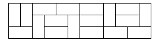
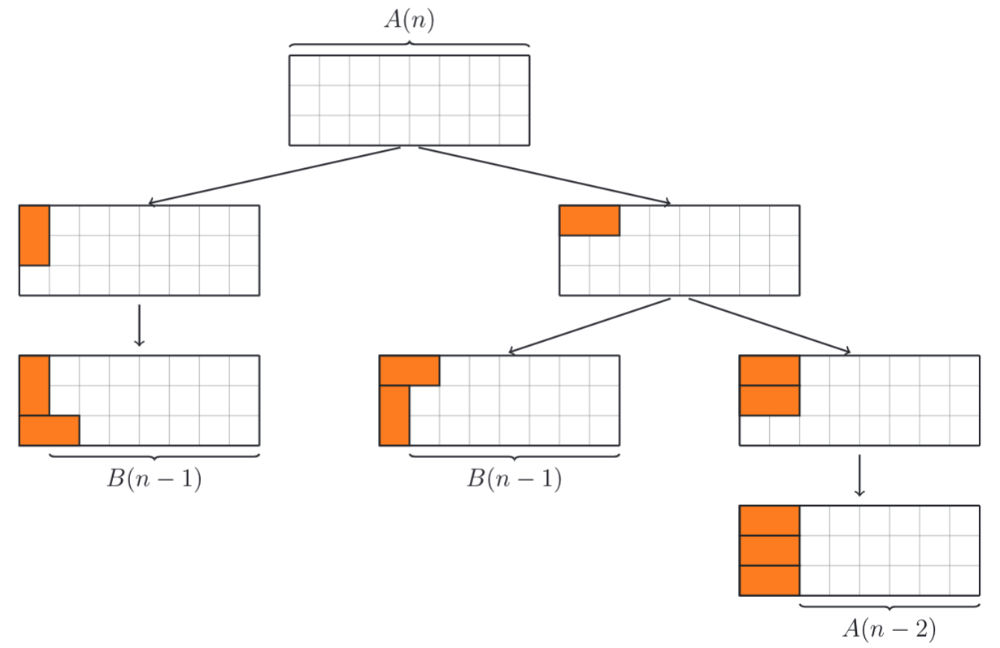
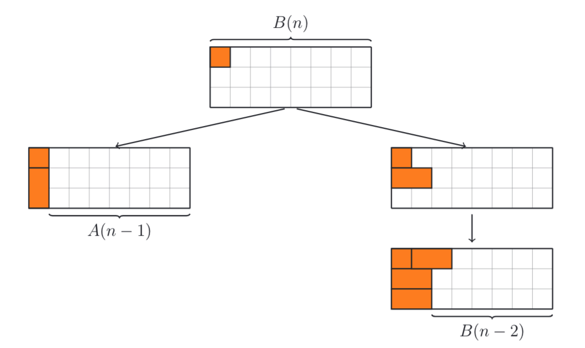

Poj 2663 Tri Tiling
条评论题目大意：
问用 \(1*2\) 的多米诺骨牌覆盖 \(3*n\) 的矩形区域，总共有多少种不同的覆盖方式？ 下图是矩形大小为 \(3*12\) 的一个有效覆盖。 
输入
有若干组输入，每组输入为一个整数 \(n,(0 <= n <= 30)\) 。最后一个输入为 -1 ，表示输入结束。
输出
对于每组输入，输出一个整数，表示总共可能的覆盖个数。
样例输入
1 | 2 |
样例输出
1 | 3 |
题目分析
如果矩形区域为 \(2*n\)，很容易找到递推公式 \[ F[n] = \begin{cases} 1, & \text{if n = 0 or n = 1} \\[2ex] F[n-1] + F[n-2], & \text{if n > 1} \end{cases} \] 现在矩形区域为 \(3*n\)，递归关系似乎不太容易推导，但是只要坚持下去，还是可以找到递推关系的。 假设总的覆盖情况有 \(A[n]\)种，我们先找第一层底递推关系。  这里出现了一种新的情况 \(B[n]\)，我们还无法表示，需要继续往下推导，直到找到递归式为止。

这样我们就找到了2组递推关系： \[
\begin{cases}
A[n] = 2*B[n-1] + A[n-2] \\[2ex]
B[n] = A[n-1] + B[n-2]
\end{cases}
\] 然后，只要找到初始情况 \(A[n]\) 和 \(B[n]\) 的值，就可以递推求解了。 代码如下：
1
2
3
4
5
6
7
8
9
10
11
12
13
14
15
16
17
18
19
20
21
int main() {
int n = 0;
int a[MAX_SIZE] = {1, 0, 3};
int b[MAX_SIZE] = {0, 1, 0};
for (int i = 3; i < MAX_SIZE; i++) {
a[i] = 2*b[i-1] + a[i-2];
b[i] = a[i-1] + b[i-2];
}
while (scanf("%d", &n) > 0) {
if (n < 0) {
break;
}
printf("%d\n", a[n]);
}
return 0;
}